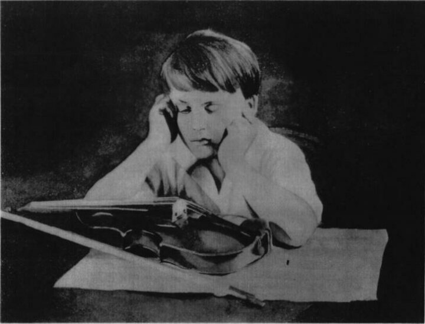

<html><head><title>Psychiatry</title><style>body{font-family:sans-serif;padding:20px;background:#f4f4f9}.chapter{background:white;padding:20px;margin-bottom:30px}.q{border-bottom:1px solid #ddd;padding:15px}.correct{background:#d4edda}</style></head><body><h1>Psychiatry</h1><div class='chapter'><h2>Depressive Disorders</h2><div class='q'><p><b>Q21:</b>  Ž‡--                  .      †         . …    ,    †            .               . …  ˆ    † ,                .                     ?                ‰è‹     ç   . ‚                                   .                 ?   Ž•- -      ç                            . ‡      -       †       . ‡        ‚           ,                       .                 ?          ? 141 </p><div class='correct'>a)                   ‚ </div><div class=''>b)           </div><div class=''>c)       Å    Å  </div><div class=''>d)      ‰  </div><p><i>   '              ,            ...</i></p></div><div class='q'><p><b>Q22:</b>            .                       ?            ç          .                   '  ? Answer Key Question No. Correct Option 53 Detailed Explanations      -                      .        ?    -                 Å …   -Å. ”Å                  . è    . </p><br><div class='correct'>a) Ž  Å ' </div><div class=''>b)   </div><div class=''>c) Ž  — </div><div class=''>d)   ' </div><p><i> ƒ             .          †/   ...</i></p></div><div class='q'><p><b>Q23:</b>    …ƒ,             . ‰  ,     , "Œ,       .   '    ”.                ?                               . Š           ,          -    .       ? 86          Å      ? </p><div class=''>a) † ‚   </div><div class=''>b)   </div><div class='correct'>c) † - </div><div class=''>d) …Å    Å ‚  ‚ ‚  </div><p><i> ƒ             . ƒ               ...</i></p></div><div class='q'><p><b>Q24:</b>  ê‘--             Ž        . ‰  ,                     ,   10 è   ,          .                     ?                   ,   ,                     – .               ?          Å          ? 142 </p><div class=''>a) “ ‚   ‚  ‚  </div><div class='correct'>b) Œ   Å            </div><div class=''>c) „      ‚   </div><div class=''>d) è       Å   </div><p><i>                   † .  †      ...</i></p></div><div class='q'><p><b>Q25:</b>            ?                        .              ?   Šˆ- -            ,  Å ,    Å      Å    ‚  .             . „        Å             Å . „   ‚   Å ‚    Š  .      ? </p><div class=''>a) ’ •   ‚  </div><div class='correct'>b) ’ •   ‚       </div><div class=''>c) ‹  </div><div class=''>d)  </div><p><i> ‰                   ,      . … :  …ƒ, ...</i></p></div><div class='q'><p><b>Q26:</b>                 . ‰                     .               ? Answer Key Question No. Correct Option 11 Detailed Explanations                 . ‡                         ,   ,                 . ‡                      .                  ? Answer Key Question No. Correct Option 87 Detailed Explanations   Šˆ- -             ,  Å ,           Å    ‚  .             . „        Å           Å .  Å  ƒÅ  , Å           Å    Å    .       ? </p><div class='correct'>a) ’ •   ‚  </div><div class=''>b) ’ •   ‚       </div><div class=''>c)  </div><div class=''>d) ‹  </div><p><i>       ,  ,              .       ...</i></p></div><div class='q'><p><b>Q27:</b>  …              ? 143 </p><div class=''>a) † ‰  </div><div class=''>b) ‹   •   </div><div class='correct'>c) †    ‚  </div><div class=''>d) ‹  </div><p><i> …        Å           ‚  . è   ,         ...</i></p></div><div class='q'><p><b>Q28:</b>    -                            ‚  ,   ,  ,        . †      ‚         .   †’-Ž  ? </p><div class='correct'>a) ’ •   ‚        Å </div><div class=''>b) † ‰  </div><div class=''>c) † ‰   ‚  </div><div class=''>d)  Å  </div><p><i> †    Å   †’-Ž     •   ‚         Å  Å , ...</i></p></div><div class='q'><p><b>Q29:</b>   Š‡- -         Å    Å ,        Å  ‚,  .    ,   Å  ,        . „                   .      Å     ‚    ? </p><div class=''>a) Å  </div><div class='correct'>b) è </div><div class=''>c)  Å</div><div class=''>d) Ž </div><p><i> „     ‚   ƒÅ                 (  ). „‹ ‚   ...</i></p></div><div class='q'><p><b>Q30:</b>   Š- -     ‚           ‚      . †                .             ? Answer Key 144 Question No. Correct Option Detailed Explanations </p><div class=''>a) „ </div><div class=''>b) “ </div><div class='correct'>c)  </div><div class=''>d) ’ Å</div><p><i>      Å      . †        ‰   Š ’: • Œ ÅÅÅ ...</i></p></div></div><div class='chapter'><h2>Sleep Disorders</h2><div class='q'><p><b>Q14:</b>  7                      ?           ,           . Å          ,                   .      ? 26 Answer Key Question No. Correct Option Detailed Explanations        …Å                     .             ? Answer Key Question No. Correct Option 39 Detailed Explanations                                  ? 50  70  Ř- -      †             . ƒ     ‰     .            ? Answer Key Question No. Correct Option Detailed Explanations                                    ‚ ‚       .           ?               –‚         .                    ê          ‹  .                  ,        .                .        ?    ‚    ‘      ,   ,     ,   ,      ˆ                  .      Å Å  Å   ? 139                    ,   ,  .              ? Answer Key Question No. Correct Option 164 Detailed Explanations   ÅÅ     „             .      Å,   Å          ,         Å        Å ,    . †   174                 .       Å    ? Answer Key Question No. Correct Option Detailed Explanations               -     ? 186           ƒ          ƒ         . Å    ‹ ,     198            .                   ,                        ,          .        ? Answer Key Question No. Correct Option Detailed Explanations                            .                  .        ? 209  † ”- -            .     …                 . ‘              ,             . „           ? </p><br><br><br><br><br><div class='correct'>a) </div><div class=''>b) </div><div class=''>c) </div><div class=''>d) </div><p><i>       -    (Ž-‘    )            †...</i></p></div><div class='q'><p><b>Q15:</b>                ?                               ?                                . ‡  ,      .    ‚      ?   ç‘- -                      .                        . è  ,        —         . –    ,             .                      ? 120     Å  Å  Å ††“è             ?       Å             ç   .        Å          ? Answer Key Question No. Correct Option Detailed Explanations   ƒ--            .                      .                 .        ‚      ?  †     ‡- -              …      …         ”         . †                   .                …  .         ? </p><br><div class=''>a)  </div><div class=''>b) Å  • </div><div class='correct'>c) Å  </div><div class=''>d) ê </div><p><i>         . ƒ                 ...</i></p></div><div class='q'><p><b>Q16:</b>  çŽ--        ƒ       † . ‰                       ,            .                      ?               ?                      .          ,                      .           ? 84   ƒˆ- -               ,      ,                            .          ?           „‹   •   ‚      .                ?   „--            .            .                .           .   ,       .             ? 210  259             ? </p><div class=''>a) ‚     </div><div class='correct'>b) Ž        </div><div class=''>c) –  ,     …       </div><div class=''>d)            </div><p><i>                    . „         ...</i></p></div><div class='q'><p><b>Q17:</b>                ‹Š           †        .            ,                    .            ? 8                          ,    ê    ,         . ‹   ,              . Å             .   ç       . 51                ?   çˆ- -   ,         ,       –‚          .                        ? Answer Key Question No. Correct Option 121 Detailed Explanations                       Å Å ?   ç--                                    .         ? Answer Key Question No. Correct Option 211 Detailed Explanations  †             . Å                     .     è            .            ? </p><div class=''>a)      </div><div class=''>b) ê      </div><div class=''>c) ƒ        è è     </div><div class='correct'>d) „             </div><p><i>            è .       è  †      '...</i></p></div><div class='q'><p><b>Q18:</b>        †              .                      .                   ?                                  ?                      ?             -Å  ? 140  † ”- -                 . „               . Å               …      .               ? </p><br><div class='correct'>a)   </div><div class=''>b) Ž </div><div class=''>c) — ƒ</div><div class=''>d) „   </div><p><i>             -     .           ...</i></p></div><div class='q'><p><b>Q19:</b>              .         .                  . ‰  ,       ,           .          ?                    . Å          ç        ?                     ?   Šç- -             ,      ,     ,     Å      Š  . †          ‚   Š  . †          ,   Å ,          .               ?            ? 260 </p><div class='correct'>a) ‘  </div><div class=''>b)     </div><div class=''>c) Ž   </div><div class=''>d)      </div><p><i>             .            ...</i></p></div><div class='q'><p><b>Q20:</b>         ’                ,           .          ,                            .    ,              ? 9  52                       . ‚                         .              ?   –Œ- -                   .           ,             ,         –—–. /ê.         ? 85               Å       Å  .   Å       Å     Å    ,   Å     .     ,     ,     ,   Å      .            ?  ç          ,    ç ,  ,                .       …       ? 261 Answer Key Question No. Correct Option Detailed Explanations </p><br><br><br><div class='correct'>a)  </div><div class=''>b)  „ </div><div class=''>c)  „„ </div><div class=''>d)  „„„ </div><p><i>         ,        †       . †    ...</i></p></div></div><div class='chapter'><h2>Eating Disorders</h2><div class='q'><p><b>Q13:</b>              ,          ?   ê’--        "       ",   , "                         ".         ?                     .          ? 38  ‹        -   ,                                  .                ,     "         ."                ?   ň- -                    . …             .           ?  83                              . Š               ?                      '  ? 119              Å Å ?  163                   .              .         ?   ‡ -Å-          Å          Å.   Å           , ç      •    . ‚ ƒ  ,      „,    •  Å   ,         - .    ƒ      ?   èŒ--                              .                  ?   ‡--          Å        ç         Œ    .   ,         . Ž             ƒ   .            ,         . Ž       .              ?   „--        , Ž          .             . è      .        ? 208   „- -                        . ”           ,             ,           ƒ  ƒ    .    ,     ,   ,      .              ? 222 Answer Key Question No. Correct Option Detailed Explanations  †         ‹- -      . ‘    …     ,  ,     .         ,        . „   ,          . „           ?  •     ‹ˆêê ‰        Answer Key Question No. Correct Option 278 Detailed Explanations </p><div class=''>a) , ‘, …</div><div class=''>b) Å, ‘</div><div class=''>c) ,</div><div class='correct'>d) , Å</div><p><i> 18  è         ,               ™ ...</i></p></div></div><div class='chapter'><h2>Psychiatric Emergencies</h2><div class='q'><p><b>Q12:</b>  ‡--                  †.           ˆ  . ‰                               . ‰                       . Š       ,          ?           -         ‚        .            ,       .       ?          …- -          . Ž              -     .                   ?                 . ‚                     . ‚                             .                 ?          ‚-             . ƒ    –                è      .              ?                          .    ?             '  ?         ‚     Š      Å     …. †       Å                .        ,   Å    .      ?   „ƒ- -               -.          ç                  . ‹                ,         ,          .              ?   …-Å-   ,    Å            . †     ,   ,     Å   Å. ‚    ƒ  ,      ,  ƒ , Å ,    .              ƒ ,  Å    .  ‘    „  Å Å         .              „   ?         ç              Ž Å . ‚ Å                                 ,   ,            .                ?                               ?              ‚         ?      -    ,       „„- -          èŽêŠ-ƒ‘.    ’  “,                  ˆ  ?  ’        -               .                     .              ? Answer Key Question No. Correct Option 231 Detailed Explanations        “ -’    ? 258   …--                                . ‡          .       ” ’          . ‚            .                  ?                      ? Answer Key Question No. Correct Option 294 Detailed Explanations </p><br><br><br><div class=''>a)             </div><div class=''>b)           </div><div class='correct'>c)             </div><div class=''>d)           </div><p><i>                              ...</i></p></div></div><div class='chapter'><h2>Normal Sexuality and Sexual Dysfunction</h2><div class='q'><p><b>Q11:</b>  "‚        ".  ,  ,                              '   ?   Ž’--             .               .       ,      25  -   . ç “   ,                        ' .     ?                   †‡. Ž               . Ž             ,                  ? 37  ‹ Ž'   ˆ ,             “ Ž,   , ˆ ,       ”, Ž  Ž '    . Ž  Ž          . Å         49               ?   Å‚- -   ,      ,        -          Å  ,     . …                            . •         .           ‰     ?             ‚                  ?         -             . – ,       .                   .          …               ? 118             Å ‚            . †  ‚            Å            Å     . †       Å   .       ?                        ?  173                    ?                 Å    ‘       Å  -     .            185     Å   ?   èˆ--                   ƒ    ƒ ,         ƒ    ‰  .     ,           . Ž             .       ?   ê‘--                ’   .      ,           ’     ,     ,  ‚       .               .       -     ,      .            ?   ƒ- -  ˆ                   ' . Å            ?   ‘--                          .          -                .                    .              ?  †                                           …    . ‘                   è       ,       .             ?                 ‘   . ˆ   ,               .    †        .     ,       †      .                    '       .           ? 277                            ?   '  ‚             ? 303 Answer Key Question No. Correct Option Detailed Explanations </p><br><div class=''>a) ç    Œ</div><div class=''>b) Ž   </div><div class='correct'>c)   Œ</div><div class=''>d)  </div><p><i>  ,  ,                       ...</i></p></div></div><div class='chapter'><h2>Attention-Deficit Disorders and Disruptive Beha...</h2><div class='q'><p><b>Q10:</b>      ,  †                    ? 6                           ,                .        ,  '      .      ?                          . ˆ          ? b)                        ?   ŒÅ- -               ,        . …         ,         ’ . ç                    .              ? 69   çç- -          -                          . è      ,       ,       ,    ,          . ƒ               .          /ê. ‡„‘Š        .       ? 82                                      . … „  ,        . ƒ                 „         .           ? 103 Answer Key Question No. Correct Option Detailed Explanations 104             '  ,                 ?         Å             Š  .       Å   Å   .  ‚         ‚    Š  ,   Å Å          ‚  .     ? 138   ÅŒ- -             .   ç                            .                        .                          .                   ?   ˆ-Å-       ‚–  . ‚   Å,  „          Å,          .  Å          ,        „  Å. †         •       • . ‚  ,              .     Å    ?             ?                                      ƒ  .             ,         ' '  ' '.    ,      ƒ  ƒ   ƒ   ,     ' '    .           ,     ƒ         .         ? 197   ‹             ? 207     ˆ                     _____. 221   †…--                    .                         ê               .              ? 230  Š         ____? Answer Key 250 Question No. Correct Option Detailed Explanations  †          玂       … .             è     . ç ,                               .    êʼn          ?                    /    †  ?                              ? 293                Œ              Œ ?   ç- -             .               ,           .                  ,              .           ? Answer Key Question No. Correct Option Detailed Explanations </p><br><div class=''>a)        </div><div class='correct'>b) ‰    </div><div class=''>c) -        </div><div class=''>d)          </div><p><i>        †              .    ,    ...</i></p></div></div><div class='chapter'><h2>Special Areas of Childhood Mental Health</h2><div class='q'><p><b>Q9:</b>        ,                        ?   èê--              .                         ,          .              .       ?            ê  ƒÅÅ. Ž            ?  48           ,     -                  è‹. Å      -                  .                    ?             . ƒ      ‰   ,          . ƒ           . ƒ                      ,       “… . ç              .               ?            ç-                    . ‡                    . ‡  ,          .      Å-Ž,         ?   Žˆ--        è                  .   ,          ,        . ƒ             . … „  ,    ,                       . ƒ  -        -     .                   ?   -     ň  ' , ˆ       ,        ,   ,      .           ? Answer Key Question No. Correct Option 111 Detailed Explanations  ’             ?   è„      Å ,  ,        .       Š           .       ?                   ? 162      ƒ       ,           Å       Å  ?                ?   ‡--          Å                    .   ƒ ,                        . Ž                          .             ?   ƒ„--          Å .                             Ž      .               .       ,            .    ‚                    .        ?  Å            ,  …- -       Ž       ,   ,    . ‚         '   .      ?   --         , ,      .                   .                            .                ?                ?  †                 ? 257        ƒ„                   .    ’ ƒ-… ,   †             ,   ,     ________          .    Œ             ?  ‹- -                .       ‚         . è … ,                 ,              . ç    . Answer Key Question No. Correct Option 311 Detailed Explanations                             .   ,                   ,                      . „   ' '  ,  'Š'   Š. „     ’              -    .      Š   ? Answer Key 317 Question No. Correct Option Detailed Explanations              -       .               ? 330   ˆ‰--        . ‡      ? Answer Key Question No. Correct Option Detailed Explanations 345 </p><div class=''>a) …    </div><div class=''>b) …    </div><div class='correct'>c) …    Å  </div><div class=''>d) ‡    </div><p><i>          ,                 ...</i></p></div></div><div class='chapter'><h2>Forensic Psychiatry</h2><div class='q'><p><b>Q1:</b>                 ?            .         .         ?                   ,        ,   ,  , &  ;     .           '  ?                           ?                             .    ,               .                   ?   -                    ,         ,   ,                  .        ?                      ?   -                  .     ,          .              .     ?                    '  ?                       ?        ,            ?            ,           .    ,  ,         .             ,    ,        .          ?                    ?                   ?                 ?   --                         .                  ,           .           ?         ,                ?                   ?               -          ?   --           , ,         .    ,           .                          .              ,                . Å          ?    - ,                 ?           ?               ?                    ?         ,                  ?                         _________.                   ?    '    '                   -?                ?                  ?                                   ,   ,      .              ,     .            ?   --              .     ,     '       .                             .         ?         ,                      .         ? </p><br><br><br><div class=''>a)    </div><div class=''>b)  </div><div class=''>c)   </div><div class='correct'>d)    </div><p><i>           -            (  ...</i></p></div><div class='q'><p><b>Q2:</b>                         ?                     ?                 ?                        .         ,      ,             -    .                ?                ?                               .                           ?                                     .           ;             ’              .     ,                   .                  .        .           ?                ?              ?   --            .                ?            '       ?   Å‚- -             ,          ƒ  .         .      ?                      -?                               ?    -       Å                          . ‚  ,         .           ?       ,             -    ?   - -           ,                                    .               ?   --               - .        ,       ,        .            ?                     .      Å      Å          .            .   ,         ,       .      Å     ?  Å               ?                   ?           ,         .         ,               ?                       ?                         ?   -                          -     .                  -     . Å  ‚            .         ? 290             ’       ?           ?                          .   ,      Å  ‚ƒ.         ?  --                        .                         ?               ?               ?             ?              Å  ‚  ƒ „  , …? </p><div class=''>a) †    „ ‡</div><div class=''>b)   </div><div class=''>c) ‚ '  </div><div class='correct'>d)  „ </div><p><i>               ,            .    ...</i></p></div><div class='q'><p><b>Q3:</b>  4      ,              .                  ?                     .               .          ?          ‚              .              ?  46                                 . ‚  ,          ,      ,   ,      . ‚         .                 ?   Å‚- -                ,     ,      . ƒ „„…†   ‡ˆ.   ‰        .    ,            .           ? 66   -           ,   ,               .               .  †   ,                         .                       .                      ? 80                    ?                         ?            ,                             ?       ,  Å                .            ‚    ?   - -     Å       ‚    ƒÅ   Å  ‚      .             ‚?                        -   .                     „   .           ?   -Å-          Å Å      Å    Å      . ‚ ƒ  ,               Å   „          …  . †    „  …‡ˆ  / . †  „                    ?   --                          Å          '   '. ‚                  ?                   ?   ƒ„--         Å         ,          ,    . …               . …       _________. 205          ,                      .           -  ,        ,  ,            ,                  '        . Å                    ? 219   --                  -    .    ,           .    Å,                              .                 ?  ƒ--        ,           .                 „   . …         ,          Å         .       ? 236  Å                        ?                  ?  „                . 255         --        .               -Å                     . ‚         ƒ„  … † /. ‡        '    †                   .                   ?  Å--           ‚. ƒ                  . „                       . „                  .                   ?   „„-              ,   ,  ,        . Å          „           . Å                            . ˆ ‚ ,  ‰  ƒŠ‹/ƒ…‹.           ?              .                            ,           .     ?  Å- -       ‚   ,              .       ?      -,                  ?                 ?   Å- -                       -       .     ,            ?   Å- -               -    .               ‚                 .  ƒ   ,                    '       .       ,              .         ? 337   ‚--                           . ƒ                              .                ?     : </p><br><div class=''>a) , , ˆ, ‰  Š</div><div class=''>b) ˆ, ‰  Š</div><div class='correct'>c) ,   Š</div><div class=''>d) , ˆ  ‰</div><p><i>      ,                .   ...</i></p></div><div class='q'><p><b>Q4:</b>                ?                 ? 23        †‡      . ˆ            ,    ‰   . ˆ            35       . ˆ           ?                       .                   ?   ‡ˆ- -                                . …         -  ‰     ‡Å-         .                      ? 67                                   . ‡                           . ‡           .                 ?  101 ‚.   ‚ .      ' '   ‚.            ,              .        ,              . ƒ               ,         .         ,           .         ?         ƒ‚†                                     ‡ . 109    ,         .     ˆ   ?                ,                       ? 116  131   ’    ?   ‡- -     Å     …       ˆ  ,  Å   ‰ ,                  Š  . † 136     ƒÅ       ,       .             ?  160    -       ,          ‡‡   .            ?  171                   ,          ?                            Å     .     ,      …    , †: …‡/ˆ‡ 183 ‚ ,        .               ?   †‡--               -     ,   ,  ,    .              .             ? 195  ‡ ,                        -  ?                  -            ?  228 „                 ?  ‡ˆ--                               . ‰         Š       . ‹           - .              ?  242  ˆ--           . ‚ ,          '        . „                         ,  ,          . Å            ?               ƒ.          . „    …,          .   ,            .       ,    …    - …      .        …   ? 248                 …         ?  274  …--                .           †      "   ". ˆ  ‰,         -                .     †  . ˆ   , ƒ„  Å,          .    †     ?  285        ‚                  '           .                         . ƒ             .              ?                                                      .     ,       ƒŒ‹ , ‰  ç‹/†‹ Å. Å              . ‰Ž     Å  ç.ƒ,        ƒ„  /  舅  ‡‹  Å.               ? 291                  ‚         ? 301              ? 309                       .               Š         ? 315  --        „…           , -            †     .                 .       323           ?     -   ,                     '           .    328             ?            ?  343             ?         ‡    „ ‹     † Œ‰? 350 </p><br><br><br><div class=''>a) ,   ˆ</div><div class=''>b) , ˆ  ‰</div><div class='correct'>c) ˆ, ‰  Š</div><div class=''>d) ,   Š</div><p><i>      '   ,               ...</i></p></div><div class='q'><p><b>Q5:</b>                                   ?   …†--                          .               ?           '      . ‹     __________                               ?            ,       ,      ,                                  è .       ?             ‰ '  … ?                 ?  ‰                 .                    ?                ?                 ?   ç- -             Å  ‹Žè-ê‘        ’  ˆ‡ˆ‡.     ‚  ‚     Å        .    ‚             Å    .      Å  Å    .           Å    ?            ,        .                  ?  ê               „                 „ . ‚ ƒ  ,  „              ,          Å       Å   . † „,              „   Å  „ „    .            ƒ      „ ?    -        ‰      Å . ‚        Å    .               ?   †ˆ--                             ,   ,    ……      ‰   .          ƒ      .                     ?              -    ?   †- -             é' ‡  ,            ‡       .                 ˆ              .                      ˆ      .           ?              .                    ?                 ?                      ?          ‡                 .   ,  ,  '     ˆ--             ‰  . Š    …              ‹   Œ ç   .  ,                 .        …   ?  ‚                 ,             .            ? 256      ƒ„  .… † /               -    .               ?      ?            ‚          ?                           ?                    ?   ç- -                       Š .                   ?  --                . ‡                                . Œ        . „   ,                   .      ƒ     ?      -ˆ,                      ?   ‡- -      '                           .     ,   '                  .              ?               Å ?              ‡ „ ? </p><br><br><div class='correct'>a) ç  </div><div class=''>b) † „ </div><div class=''>c) Ž  </div><div class=''>d) ƒ  </div><p><i>                        .     ...</i></p></div><div class='q'><p><b>Q6:</b>  “     (  )       (  ,  )  .”-    .                 '    '      ? 5   ‰Š--                     Å .     -    ‚            ,           ‚.       ?   …ç- -                  . Ž                            . Ž     „-ƒÅ   ,        ;           .      ?                           ? 47             …     ‰?                     .           -    ?   ‡ˆ--          †   .                                             .              ?                 ,                     ?   ƒ„- -      …        .                      . †              .         ?   Š--              . ˆ                ‹Œ ,              .       ’   †      ,               . ç     ‚       .       ?                ’“è         ?                       ?    -        Å     ’ˆ “        …ˆ Å . ‚ ,               ”   ç  .        ?     Œ--        ,    . ‚                         .     ,  †   Å       .   ç   ,      Å      Å    .                 ?                  .         ?              ?   „- -                     -             -    .                ,                 . ‹                 .                 ?   ‡--                                      .       ,    ,                    .    ,                    .            ?                       Å          ƒ  . ‰           Å . ‰ ,            .      Å     ?   ‰--                               Š           .       -                . Å            ?   è--                             ê. Š         , ,        . Š                †          è  .             Œ ,         .            …        '   ?               ?                         Œ   †- .       ,                275     . ˆ   ,                . ,             †     . ‚ ƒ„  …. ç   Ž-           è   . ê †  †             ?                        ?        ‚          - ‚ (’ˆ)   .                .               ( ‘).                  ?   ƒˆ-  -               .         ,                    .             ,                       .                ?  ‰- -,          ,                     .       ‚               .           ,             .     ‚  ?          ,                   ? 316   -              .      ,                   . Œ                 .           ƒ     ? Answer Key Question No. Correct Option 324 Detailed Explanations   Š- -        ,   ,           ,            .                ,       ,       .                   ?                      '  ?   †--               .                 . ‡   Å   . „     ˆ.‰ ‰.        ?          ? </p><div class=''>a)            ‡   ‡</div><div class=''>b)  ‡           </div><div class='correct'>c)  ‡      ‡ „    </div><div class=''>d)        ‡     </div><p><i> „              .           ...</i></p></div><div class='q'><p><b>Q7:</b>  ƒ                        ?  ç     . Å        ,   "'   , ".              -     .            ? 24          ,                 .      ? 36                           ç   ?        ’        Œ            . ƒ      ,     ,   .  ‰   ,   ,   ,  .      . 68                              .         ? 81                 .                      . Š  ,    ,        ,  ‹   .                      .       ? 102                   . Š       ,   ,     ˆ         è ˆ. ç                    .       ‹‹„     ˆ     ? 110   ƒˆ- -          .         ‰  „            . Š                        .    ,                         ‹ˆ  . Å    ,  ,        .         ? 117   ‹--            .       ,             .            ? 132 Answer Key Question No. Correct Option Detailed Explanations  ”Å   ‚                   ‚     .   Å ,     Å  ‚   . è                ? 137   Ž‚- -                  .                  .      ? 161            -„  ? 172                 ' '? 184   ‡ˆ--            ,         ƒ  .                   ? 196               .                             .           ,                .                  .           ? 206  220                         . Å                      .                                .       ?    ' ‹Œ          . ç     ,                   .                  '              .             ? 229  ‡--                         Å.    ,              Å. ‰     ,        . ‰  Ž …           ,  Å .            237            . Ž                 ? Answer Key Question No. Correct Option Detailed Explanations            ‹Œ             . ‚ ,     ,         .                    ? 243 Answer Key Question No. Correct Option Detailed Explanations           ,                          .        …      '   ? 249  †                 .   …                          . Å          ‡-ˆ           . Å         . ‰                        ?                                ?      „‡     ' . ƒ       ,             . ˆ    ‰   . „   †                       .            Š       ? 286 Answer Key Question No. Correct Option Detailed Explanations   „“- -                   ,        ,   ,          ,     ,        . ‘                   .         ? 292   „ˆ-  -        . ‹                        . ‹                             . ‹         .                      ? 302              ŒçŽ                       . è … ,              .             ?   †- -                         , Š   ‡       Š       .          ?   ‹- -       ‚        .                .      ,          ‡  .             .                    ? 329   ‚‰- -                 ‹-             ,       ,  , Œ ,     .                ? 338    -     ,                        .         ,               ? 344  è        ,      „     ? </p><br><br><div class=''>a) è   '       …     </div><div class=''>b) è   '       ‡ „      </div><div class='correct'>c) è   '            </div><div class=''>d)   „ </div><p><i>                             , ...</i></p></div><div class='q'><p><b>Q8:</b>             ‚                 .                        ?   ‰Ž--                        .             ,        .                  ?               ?               ?   ’- - -          -     ç   . “…,       ,   .              ?   ‹Œ- -     -                        .  ‚   ,           .        ?   ç‡--          …                        .       ?             ,           -     ?   çˆ- -                        ,                 .  Žè                  .                 ?   ç‡- -        Š           ‚   .          '    Å     .                    ‚      '  .       ?     -       ,            .                ?          ÅÅ      .                    ?   èê--   ,   ,      †          ,      Å        . Š  ,      ,    ,            ,                  Å         .   ,  Å         .            ?                Œ   ƒ   -    ,  ç        . Ž                  -    .          ?    --            ‹             .    ‹        -    .          ?                          ?                              :   è‘--                .         ,  ,              . Š                  .              ?  † - -                  .              . Å  ’  …              Œ   ,  ….    ,                ,          .     …   ?                                 †.           ? 276        ‚                           . è         .              .                        ?  310        ‚     '             . è ,        .   †‡-‘,                ?                     ?                     -                   .        .   ‚Š- -  ,                 ,        ,         -     .             ? Answer Key Question No. Correct Option Detailed Explanations   ‚--          -           ˆ .               .               ?  ˆ-‡ -         ‡      . ƒ   ‡,        .        , ,    ‡          „      ‡     ? 351 Answer Key Question No. Correct Option Detailed Explanations </p><br><br><br><div class=''>a) ‰Œ </div><div class=''>b)  </div><div class='correct'>c) ‰ </div><div class=''>d) ˆ… </div><p><i>                       ,          ...</i></p></div></div></body></html>